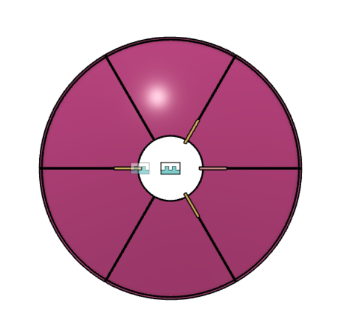

### Week 12
##### _Monday, November 21_
Noah was out of town this week, so Xavier and I worked on the coupling part that would have a double purpose: to support the rods that hold the secondary reflector and to assist in rotating the reflector. The configuration is below.
Reflector pieces in pink, brackets in yellow:

I was struggling to make a part, but Xavier successfully made a draft part.
Here is Xavier's part:
<img src="./xavier bracket.png" alt="xavier bracket" width="500"/>
##### _Wednesday, November 23_
Noah, Xavier, and Justin were out today, so Nathan and I discussed what could be done so as to not waste a day of work. We decided to try to print out the coupling parts for the reflector, so I went into Xavier's CAD model for the part and added holes. One hole at the top would be the hold for the rod, a front hole would allow for rotation, and 4 holes on the side would allow each side of a reflector piece to be held together with screws. We then went to the 3D printers and began a print on the part.
Here's the part:
I was able to get the print started, but the filament didn't want to stick and the print seemed to scrape itself up, so Nathan had to troubleshoot over break.
<video width = "500" controls>
<source src="./first print.mp4" type="video/mp4">
</video>
[Head back to the home page](../index.html).